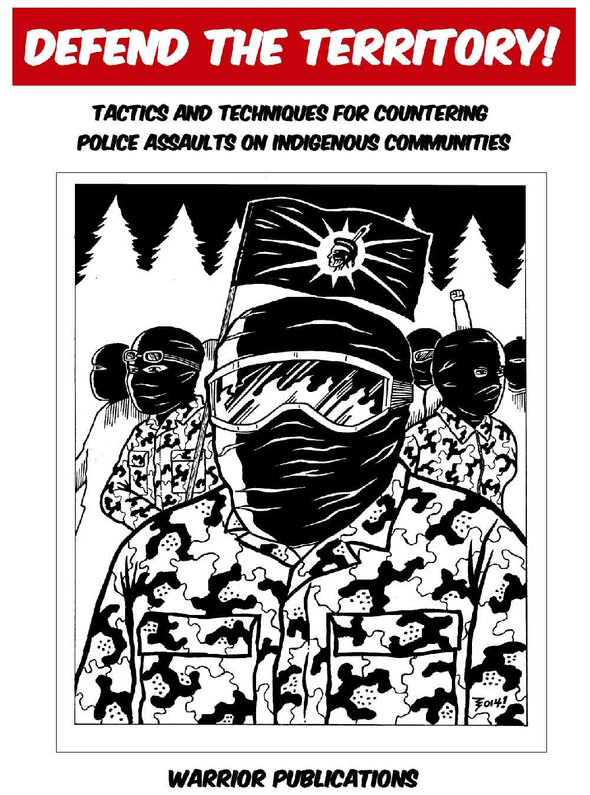
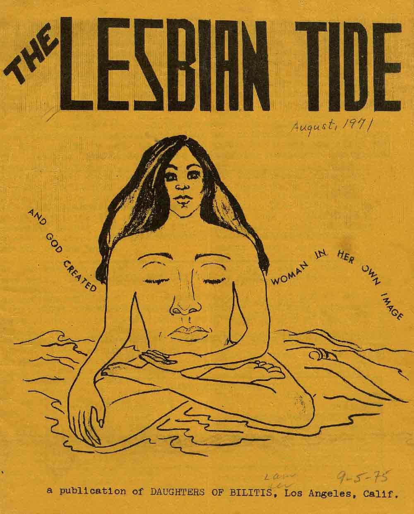
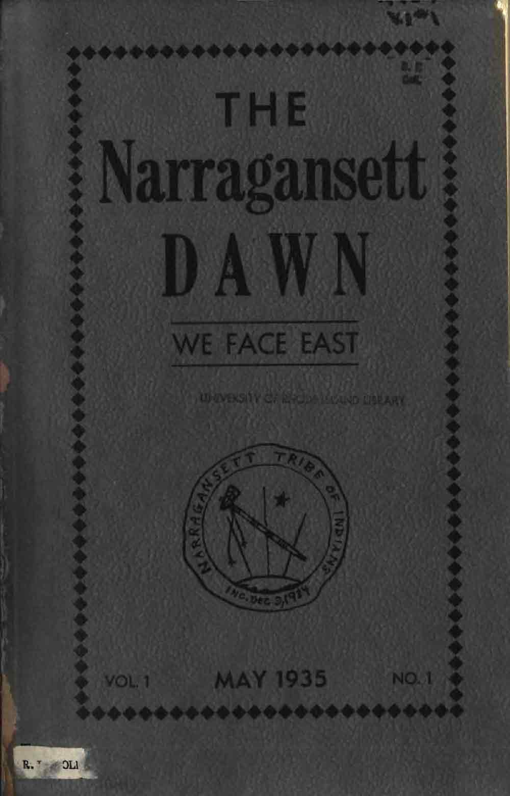

Amazon Quarterly
Vol. 3, Issue 2
March 1975
Includes “The Women of Dan...” by Audre Lorde, p.52
Download 54.3MB PDF
Source
Capitalist Patriarchy and the Case for Socialist Feminism
Edited by Zillah R. Eisenstein
Monthly Review Press, 1979
First published appearance of “The Combahee River Collective: A Black Feminist Statement” p.362
Download 6.5MB PDF

DEFEND THE TERRITORY!
TACTICS AND TECHNIQUES FOR COUNTERING POLICE ASSAULTS ON INDIGENOUS COMMUNITIES
Warrior Publications, Spring 2014
Download 7.2MB PDF
Source
DEFEND THE TERRITORY!
TACTICS AND TECHNIQUES FOR COUNTERING POLICE ASSAULTS ON INDIGENOUS COMMUNITIES
Warrior Publications, Spring 2014
Download 7.2MB PDF
Source

DIY EMERGENCY TYVEK TENT instructional zine
Indigenous Action
October 2020
Download 6.2MB PDF
Source

INTERRUPT 14
newsletter of computer people for peace
February 1971
Includes “1984 is here,” page 11
Download 7.7MB PDF
Source

The Lesbian Tide
Vol 1, Issue 1, August 1971
“a publication of DAUGHTERS OF BILITIS”
Download 15MB PDF
Source
The Lesbian Tide
Vol 1, Issue 1, August 1971
“a publication of DAUGHTERS OF BILITIS”
Download 15MB PDF
Source
“Mimeo Argument”
by Bernadette Mayer
(appearing in The Poetry Project Newsletter, p.8)
April 1982
Download 1.5MB PDF
Source

The Narragansett Dawn
Vol. 1, No. 1, May 1935
Princess Red Wing, co-founder and editor
Download 1.9MB PDF
Source
The Narragansett Dawn
Vol. 1, No. 1, May 1935
Princess Red Wing, co-founder and editor
Download 1.9MB PDF
Source
“The Negro and Cybernation”
James Boggs
1964 talk delivered at “The Evolving Society,” the First Annual Conference on the Cybercultural Revolution
Download 1.5MB PDF
Source
PALANTE
Newspaper of The Young Lords Party
November 20, 1970
Includes “The Young Lords Party 13 Point Program and Platform,” pages 22–23
Download 24.3MB PDF
Source
Towards a Gay Communism:
Elements of a Homosexual Critique
Mario Mieli, 1977
Pluto Press
Download 2.4MB PDF
Source
Uprooting Colonialism: The Limitations of Indigenous Peoples’ Day
Indigenous Action
2017
Download 1MB PDF
Source
Wanting to be Indian: When Spiritual Searching Turns Into Cultural Theft
Myke Johnson
Download 1.2MB PDF